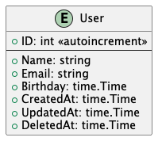

CRUD Interface
This section will show how to use GORM to perform the simple CRUD operations. For advance operations, please refer to the GORM documentation.
We'll use the following struct for the CRUD operations.
type User struct {
gorm.Model
Name string
Email string
BirthDate time.Time
}

Create
To create a new record, we can use the Create method.
func CreateUser(db *gorm.DB, user *User) error {
return db.Create(user).Error
}
Query
To query a record, we can use the First method.
func GetUser(db *gorm.DB, id int) (*User, error) {
var user User
err := db.First(&user, id).Error
return &user, err
}
Update
To update a record, we can use the Save method. If save value does not contain primary key, it will insert a new record.
// Save all fields
func UpdateUser(db *gorm.DB, user *User) error {
return db.Save(user).Error
}
// Update User's name
func UpdateUserName(db *gorm.DB, user *User, name string) error {
return db.Model(user).Update("Name", name).Error
}
// Save only the fields that are changed
func UpdateUserFields(db *gorm.DB, user *User, fields map[string]interface{}) error {
return db.Model(user).Updates(fields).Error
}
Delete
To delete a record, we can use the Delete method.
Soft Delete
If the model includes a gorm.DeleteAt field (which is included in gorm.Model), it will get soft delete ability automatically!
// Delete user by id
func DeleteUser(db *gorm.DB, id int) error {
return db.Delete(&User{}, id).Error
}
// Delete user by name
func DeleteUserByName(db *gorm.DB, name string) error {
return db.Where("name = ?", name).Delete(&User{}).Error
}
// Delete records with conditions
func DeleteUsers(db *gorm.DB, conditions map[string]interface{}) error {
return db.Where(conditions).Delete(&User{}).Error
}
// Delete all records
func DeleteAllUsers(db *gorm.DB) error {
return db.Where("1 = 1").Delete(&User{}).Error
}
````
### Block Global Delete
If performing a batch delete without any conditions. GORM WON't allow it. You need to set the `AllowGlobalUpdate` to true.
```go
db.Delete(&User{}).Error // gorm.ErrMissingWhereClause
db.Delete(&[]User{{Name: "jinzhu1"}, {Name: "jinzhu2"}}).Error // gorm.ErrMissingWhereClause
db.Where("1 = 1").Delete(&User{})
// DELETE FROM `users` WHERE 1=1
db.Exec("DELETE FROM users")
// DELETE FROM users
db.Session(&gorm.Session{AllowGlobalUpdate: true}).Delete(&User{})
// DELETE FROM users
Advanced Query
Please refer to the GORM documentation for more advanced query operations.
There are some interesting query operations that GORM provides. Here are some of them: 1. Locking 2. Subquery 3. Group Conditions 4. Iteration 5. Scopes
Query the soft deleted records
Use db.Unscoped() to query the soft deleted records. The Unscoped method will not include the " user.deleted_at IS NULL" to the where clause. Therefore, it will return all records including the soft deleted records.
// Search for users where deleted_at is null
func GetSoftDeletedUsers(db *gorm.DB) ([]User, error) {
var users []User
err := db.Unscoped().Where("deleted_at IS NULL").Find(&users).Error
return users, err
}